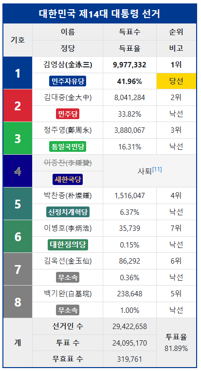
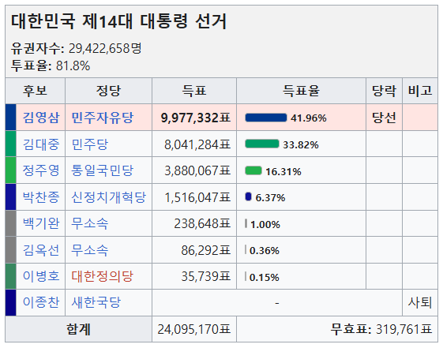

# =============================================================================
# 16대 대통령선거 데이터 전처리 함수
# =============================================================================
import pandas as pd
def convert_github_url_to_raw(github_url):
"""
깃허브 blob URL을 raw URL로 변환
Parameters:
-----------
github_url : 깃허브 파일 URL
Returns:
--------
raw URL (pandas가 직접 읽을 수 있는 형태)
Example:
--------
blob_url = "https://github.com/user/repo/blob/main/file.xls"
raw_url = convert_github_url_to_raw(blob_url)
# "https://github.com/user/repo/raw/main/file.xls"
"""
if '/blob/' in github_url:
return github_url.replace('/blob/', '/raw/')
return github_url
def process_16th_presidential_election(file_path):
"""
16대 대통령선거 데이터 전처리 함수
엑셀 파일 구조:
- Sheet 0: 전국투표구별득표상황 (메인 데이터)
- Sheet 1: 위원회별부재자득표상황 (시도명 매핑용)
특별한 처리 로직:
1. 두 시트를 위원회명으로 병합하여 시도명 추가
2. 시도별 합계 행 자동 생성
3. 전국 합계 행 자동 생성 및 맨 위 배치
4. 위원회명에서 대괄호와 괄호 정리
Parameters:
-----------
file_path : 파일 경로 (로컬 파일, 깃허브 blob URL, 또는 raw URL)
- 로컬: "./data/16대_선거결과.xls"
- 깃허브 blob: "https://github.com/user/repo/blob/main/파일.xls" (자동 변환됨)
- 깃허브 raw: "https://github.com/user/repo/raw/main/파일.xls"
Returns:
--------
전처리된 선거 데이터 (pandas DataFrame, 전국/시도별 합계 포함)
Example:
--------
# 깃허브에서 불러오기 (blob URL 그대로 사용 - 자동 변환됨)
blob_url = "https://github.com/user/repo/blob/main/16대/선거결과.xls"
df = process_16th_presidential_election(blob_url)
# 로컬 파일 불러오기
df = process_16th_presidential_election("./data/16대_선거결과.xls")
"""
# ================================
# 1. 파일 로드 (자동 감지)
# ================================
if file_path.startswith(('http://', 'https://')):
# URL인 경우 - blob URL이면 raw URL로 변환
raw_url = convert_github_url_to_raw(file_path)
print(f"웹에서 파일 로드: {raw_url}")
if raw_url != file_path:
print(f" (blob URL을 raw URL로 자동 변환)")
xls = pd.ExcelFile(raw_url)
else:
# 로컬 파일인 경우
print(f"로컬에서 파일 로드: {file_path}")
xls = pd.ExcelFile(file_path)
# ================================
# 2. 두 시트 읽기
# ================================
df_main = xls.parse(0) # Sheet 0: 전국투표구별득표상황
df_mapping = xls.parse(1) # Sheet 1: 위원회별부재자득표상황 (시도명 매핑용)
print(f"메인 데이터 크기: {df_main.shape}")
print(f"매핑 데이터 크기: {df_mapping.shape}")
print(f"메인 컬럼: {list(df_main.columns)}")
# ================================
# 3. 합계 행 필터링
# ================================
# 메인 데이터에서 읍면동명이 '합계'인 행만 추출
df_main_filtered = df_main[df_main['읍면동명'] == '합계'].copy()
print(f"합계 행 필터링 후 크기: {df_main_filtered.shape}")
# ================================
# 4. 위원회명 정리 (대괄호 제거)
# ================================
# 위원회명에서 대괄호 [, ] 제거하여 새로운 컬럼 생성
df_main_filtered['위원회명_clean'] = (
df_main_filtered['위원회명']
.str.replace(r'[\[\]]', '', regex=True) # 대괄호 제거
)
df_mapping['위원회명_clean'] = (
df_mapping['위원회명']
.astype(str)
.str.replace(r'[\[\]]', '', regex=True) # 대괄호 제거
)
print(f"위원회명 정리 완료")
# ================================
# 5. 시도명 병합
# ================================
# 매핑 시트의 시도명 정보를 메인 데이터에 병합
df_merged = pd.merge(
df_main_filtered,
df_mapping[['시도명', '위원회명_clean']], # 시도명과 정리된 위원회명만 가져옴
on='위원회명_clean',
how='left' # 메인 데이터 기준으로 left join
)
print(f"시도명 병합 후 크기: {df_merged.shape}")
# ================================
# 6. 컬럼 정리 및 순서 재배열
# ================================
# 필요한 컬럼만 남기고 순서 재배열
exclude_cols = ['위원회명', '읍면동명', '투표구명'] # 제외할 컬럼들
ordered_cols = ['시도명', '위원회명_clean'] + [
col for col in df_merged.columns
if col not in ['시도명', '위원회명_clean'] + exclude_cols
]
df_final = df_merged[ordered_cols]
print(f"컬럼 정리 후: {len(df_final.columns)}개 컬럼")
# ================================
# 7. 시도별 합계 행 생성
# ================================
# 시도명 원래 순서 보존
sido_order = df_final['시도명'].drop_duplicates().tolist()
print(f"시도 개수: {len(sido_order)}")
# 시도별로 수치형 컬럼들의 합계 계산
agg_df = (
df_final.groupby('시도명', sort=False)
.agg(lambda x: x.iloc[0] if x.name in ['시도명', '위원회명_clean']
else x.sum(numeric_only=True))
.reset_index()
)
agg_df['위원회명_clean'] = '합계' # 합계 행 표시
agg_df = agg_df[df_final.columns.tolist()] # 컬럼 순서 맞춤
# ================================
# 8. 시도별 합계 행을 각 시도 위에 삽입
# ================================
df_list = []
for sido in sido_order:
# 해당 시도의 데이터
sido_data = df_final[df_final['시도명'] == sido]
# 해당 시도의 합계 행
sido_total = agg_df[agg_df['시도명'] == sido]
# 합계 행을 위에 두고 이어 붙임
df_list.append(pd.concat([sido_total, sido_data], ignore_index=True))
df_with_sido_totals = pd.concat(df_list, ignore_index=True)
print(f"시도별 합계 추가 후 크기: {df_with_sido_totals.shape}")
# ================================
# 9. 전국 합계 행 생성
# ================================
# 시도별 합계 행들만 추출하여 전국 합계 계산
national_source_rows = df_with_sido_totals[
df_with_sido_totals['위원회명_clean'] == '합계'
]
# 수치형 컬럼들의 합계 계산 (2번째 컬럼부터)
national_totals = national_source_rows.iloc[:, 2:].sum(numeric_only=True)
national_totals['시도명'] = '전국'
national_totals['위원회명_clean'] = '합계'
national_totals = national_totals[df_with_sido_totals.columns] # 컬럼 순서 맞춤
# ================================
# 10. 전국 합계 행을 맨 위에 삽입
# ================================
df_final_with_national = pd.concat(
[pd.DataFrame([national_totals]), df_with_sido_totals],
ignore_index=True
)
print(f"전국 합계 추가 후 크기: {df_final_with_national.shape}")
# ================================
# 11. 위원회명 최종 정리 (괄호 제거)
# ================================
# 위원회명에서 괄호와 그 안의 내용 제거
df_final_with_national['위원회명_clean'] = (
df_final_with_national['위원회명_clean']
.str.replace(r"\(.*\)", "", regex=True) # (내용) 형태 제거
.str.strip() # 앞뒤 공백 제거
)
# ================================
# 12. 결과 반환
# ================================
print(f"최종 데이터 크기: {df_final_with_national.shape}")
print("전처리 완료!")
print(f" - 전국 합계: 1행")
print(f" - 시도별 합계: {len(sido_order)}행")
print(f" - 위원회별 상세: {df_final_with_national.shape[0] - 1 - len(sido_order)}행")
return df_final_with_national
# =============================================================================
# 사용 예시
# =============================================================================
# 깃허브 blob URL로 불러오는 경우 (자동으로 raw URL로 변환됨)
# blob_url = "https://github.com/~~/korean-elections/blob/main/original/Presidential_Elections/16th_2002/제16대 대통령선거 개표자료.xls"
# df_16th = process_16th_presidential_election(blob_url)
# 로컬에서 불러오는 경우
# df_16th = process_16th_presidential_election("./data/16대_대선결과.xls")
# 업로드된 파일 사용하는 경우
# df_16th = process_16th_presidential_election("제16대 대통령선거 개표자료.xls")
# 결과 확인
# print(df_16th.head(10)) # 상위 10행 확인
# print(df_16th.columns.tolist())
# print(df_16th['시도명'].value_counts()) # 시도별 행 개수 확인16th_2002
# 깃허브 blob URL로 불러오는 경우 (자동으로 raw URL로 변환됨)
blob_url16 = "https://github.com/sw1kwon/korean-elections/blob/main/original/Presidential_Elections/16th_2002/%EC%A0%9C16%EB%8C%80%20%EB%8C%80%ED%86%B5%EB%A0%B9%EC%84%A0%EA%B1%B0%20%EA%B0%9C%ED%91%9C%EC%9E%90%EB%A3%8C.xls"
df_16th = process_16th_presidential_election(blob_url16)웹에서 파일 로드: https://github.com/sw1kwon/korean-elections/raw/main/original/Presidential_Elections/16th_2002/%EC%A0%9C16%EB%8C%80%20%EB%8C%80%ED%86%B5%EB%A0%B9%EC%84%A0%EA%B1%B0%20%EA%B0%9C%ED%91%9C%EC%9E%90%EB%A3%8C.xls
(blob URL을 raw URL로 자동 변환)
메인 데이터 크기: (17479, 14)
매핑 데이터 크기: (261, 13)
메인 컬럼: ['위원회명', '읍면동명', '투표구명', '선거인수', '투표수', '이회창', '노무현', '이한동', '권영길', '김영규', '김길수', '유효투표수', '무표투표수', '기권수']
합계 행 필터링 후 크기: (244, 14)
위원회명 정리 완료
시도명 병합 후 크기: (244, 16)
컬럼 정리 후: 13개 컬럼
시도 개수: 16
시도별 합계 추가 후 크기: (260, 13)
전국 합계 추가 후 크기: (261, 13)
최종 데이터 크기: (261, 13)
전처리 완료!
- 전국 합계: 1행
- 시도별 합계: 16행
- 위원회별 상세: 244행df_16th| 시도명 | 위원회명_clean | 선거인수 | 투표수 | 이회창 | 노무현 | 이한동 | 권영길 | 김영규 | 김길수 | 유효투표수 | 무표투표수 | 기권수 | |
|---|---|---|---|---|---|---|---|---|---|---|---|---|---|
| 0 | 전국 | 합계 | 34991529 | 24784963 | 11443297 | 12014277 | 74027 | 957148 | 22063 | 51104 | 24561916 | 223047 | 10206566 |
| 1 | 서울 | 합계 | 7670682 | 5475715 | 2447376 | 2792957 | 12724 | 179790 | 4706 | 6437 | 5443990 | 31725 | 2194967 |
| 2 | 서울 | 종로구 | 140105 | 99988 | 45901 | 49989 | 304 | 2995 | 71 | 121 | 99381 | 607 | 40117 |
| 3 | 서울 | 중구 | 108936 | 76499 | 33712 | 39876 | 164 | 2073 | 66 | 101 | 75992 | 507 | 32437 |
| 4 | 서울 | 용산구 | 184276 | 127810 | 61349 | 61437 | 309 | 3711 | 108 | 148 | 127062 | 748 | 56466 |
| ... | ... | ... | ... | ... | ... | ... | ... | ... | ... | ... | ... | ... | ... |
| 256 | 제주 | 합계 | 391151 | 268227 | 105744 | 148423 | 744 | 8619 | 288 | 981 | 264799 | 3428 | 122924 |
| 257 | 제주 | 제주시 | 198820 | 136002 | 55892 | 73679 | 315 | 4609 | 128 | 250 | 134873 | 1129 | 62818 |
| 258 | 제주 | 북제주군 | 74769 | 51969 | 20345 | 28501 | 168 | 1474 | 70 | 316 | 50874 | 1095 | 22800 |
| 259 | 제주 | 서귀포시 | 61099 | 41151 | 15077 | 24026 | 118 | 1288 | 30 | 159 | 40698 | 453 | 19948 |
| 260 | 제주 | 남제주군 | 56463 | 39105 | 14430 | 22217 | 143 | 1248 | 60 | 256 | 38354 | 751 | 17358 |
261 rows × 13 columns
df_16th.columns.tolist()['시도명',
'위원회명_clean',
'선거인수',
'투표수',
'이회창',
'노무현',
'이한동',
'권영길',
'김영규',
'김길수',
'유효투표수',
'무표투표수',
'기권수']rename_dict16 = {
'시도명_': '시도',
'위원회명_clean': '구시군',
'이회창': '득표수_1_한나라당_이회창',
'노무현': '득표수_2_새천년민주당_노무현',
'이한동': '득표수_3_하나로국민연합_이한동',
'권영길': '득표수_4_민주노동당_권영길',
'김영규': '득표수_5_사회당_김영규',
'김길수': '득표수_6_호국당_김길수',
'유효투표수': '득표수_계',
'무표투표수': '무효투표수'
}df_16th.rename(columns=rename_dict16)| 시도명 | 구시군 | 선거인수 | 투표수 | 득표수_1_한나라당_이회창 | 득표수_2_새천년민주당_노무현 | 득표수_3_하나로국민연합_이한동 | 득표수_4_민주노동당_권영길 | 득표수_5_사회당_김영규 | 득표수_6_호국당_김길수 | 득표수_계 | 무효투표수 | 기권수 | |
|---|---|---|---|---|---|---|---|---|---|---|---|---|---|
| 0 | 전국 | 합계 | 34991529 | 24784963 | 11443297 | 12014277 | 74027 | 957148 | 22063 | 51104 | 24561916 | 223047 | 10206566 |
| 1 | 서울 | 합계 | 7670682 | 5475715 | 2447376 | 2792957 | 12724 | 179790 | 4706 | 6437 | 5443990 | 31725 | 2194967 |
| 2 | 서울 | 종로구 | 140105 | 99988 | 45901 | 49989 | 304 | 2995 | 71 | 121 | 99381 | 607 | 40117 |
| 3 | 서울 | 중구 | 108936 | 76499 | 33712 | 39876 | 164 | 2073 | 66 | 101 | 75992 | 507 | 32437 |
| 4 | 서울 | 용산구 | 184276 | 127810 | 61349 | 61437 | 309 | 3711 | 108 | 148 | 127062 | 748 | 56466 |
| ... | ... | ... | ... | ... | ... | ... | ... | ... | ... | ... | ... | ... | ... |
| 256 | 제주 | 합계 | 391151 | 268227 | 105744 | 148423 | 744 | 8619 | 288 | 981 | 264799 | 3428 | 122924 |
| 257 | 제주 | 제주시 | 198820 | 136002 | 55892 | 73679 | 315 | 4609 | 128 | 250 | 134873 | 1129 | 62818 |
| 258 | 제주 | 북제주군 | 74769 | 51969 | 20345 | 28501 | 168 | 1474 | 70 | 316 | 50874 | 1095 | 22800 |
| 259 | 제주 | 서귀포시 | 61099 | 41151 | 15077 | 24026 | 118 | 1288 | 30 | 159 | 40698 | 453 | 19948 |
| 260 | 제주 | 남제주군 | 56463 | 39105 | 14430 | 22217 | 143 | 1248 | 60 | 256 | 38354 | 751 | 17358 |
261 rows × 13 columns
df_16th = df_16th.rename(columns=rename_dict16)df_16th[df_16th['구시군'] == '합계']| 시도명 | 구시군 | 선거인수 | 투표수 | 득표수_1_한나라당_이회창 | 득표수_2_새천년민주당_노무현 | 득표수_3_하나로국민연합_이한동 | 득표수_4_민주노동당_권영길 | 득표수_5_사회당_김영규 | 득표수_6_호국당_김길수 | 득표수_계 | 무효투표수 | 기권수 | |
|---|---|---|---|---|---|---|---|---|---|---|---|---|---|
| 0 | 전국 | 합계 | 34991529 | 24784963 | 11443297 | 12014277 | 74027 | 957148 | 22063 | 51104 | 24561916 | 223047 | 10206566 |
| 1 | 서울 | 합계 | 7670682 | 5475715 | 2447376 | 2792957 | 12724 | 179790 | 4706 | 6437 | 5443990 | 31725 | 2194967 |
| 27 | 부산 | 합계 | 2786142 | 1983492 | 1314274 | 587946 | 2148 | 61281 | 1380 | 2064 | 1969093 | 14399 | 802650 |
| 44 | 대구 | 합계 | 1827162 | 1299968 | 1002164 | 240745 | 1699 | 42174 | 810 | 1317 | 1288909 | 11059 | 527194 |
| 53 | 인천 | 합계 | 1824905 | 1236447 | 547205 | 611766 | 3600 | 61655 | 1612 | 1978 | 1227816 | 8631 | 588458 |
| 64 | 광주 | 합계 | 967222 | 755398 | 26869 | 715182 | 803 | 7243 | 305 | 1014 | 751416 | 3982 | 211824 |
| 70 | 대전 | 합계 | 998541 | 675029 | 266760 | 369046 | 2157 | 29728 | 747 | 1408 | 669846 | 5183 | 323512 |
| 76 | 울산 | 합계 | 729645 | 510496 | 267737 | 178584 | 997 | 57786 | 502 | 716 | 506322 | 4174 | 219149 |
| 82 | 경기 | 합계 | 6944934 | 4831412 | 2120191 | 2430193 | 26072 | 209346 | 4119 | 8085 | 4798006 | 33406 | 2113522 |
| 123 | 강원 | 합계 | 1131168 | 773560 | 400405 | 316722 | 3406 | 38722 | 969 | 2713 | 762937 | 10623 | 357608 |
| 142 | 충북 | 합계 | 1079642 | 734385 | 311044 | 365623 | 3205 | 41731 | 949 | 2610 | 725162 | 9223 | 345257 |
| 155 | 충남 | 합계 | 1398762 | 922882 | 375110 | 474531 | 4973 | 49579 | 1303 | 4322 | 909818 | 13064 | 475880 |
| 171 | 전북 | 합계 | 1427135 | 1064744 | 65334 | 966053 | 2505 | 14904 | 817 | 5187 | 1054800 | 9944 | 362391 |
| 187 | 전남 | 합계 | 1521109 | 1161511 | 53074 | 1070506 | 2830 | 12215 | 988 | 6707 | 1146320 | 15191 | 359598 |
| 210 | 경북 | 합계 | 2044285 | 1463664 | 1056446 | 311358 | 3332 | 62522 | 1344 | 2936 | 1437938 | 25726 | 580621 |
| 235 | 경남 | 합계 | 2249044 | 1628033 | 1083564 | 434642 | 2832 | 79853 | 1224 | 2629 | 1604744 | 23289 | 621011 |
| 256 | 제주 | 합계 | 391151 | 268227 | 105744 | 148423 | 744 | 8619 | 288 | 981 | 264799 | 3428 | 122924 |
df_16th.to_csv("temp1_president_16.csv", index=False, encoding="utf-8-sig")15th_1997
# =============================================================================
# 15대 대통령선거 데이터 전처리 함수
# =============================================================================
import pandas as pd
def convert_github_url_to_raw(github_url):
"""
깃허브 blob URL을 raw URL로 변환
Parameters:
-----------
github_url : 깃허브 파일 URL
Returns:
--------
raw URL (pandas가 직접 읽을 수 있는 형태)
Example:
--------
blob_url = "https://github.com/user/repo/blob/main/file.xls"
raw_url = convert_github_url_to_raw(blob_url)
# "https://github.com/user/repo/raw/main/file.xls"
"""
if '/blob/' in github_url:
return github_url.replace('/blob/', '/raw/')
return github_url
def process_15th_presidential_election(file_path):
"""
15대 대통령선거 데이터 전처리 함수
엑셀 파일 구조:
- 0행: 헤더 첫 번째 줄
- 1행: 헤더 두 번째 줄
- 2행: 헤더 세 번째 줄
- 3행: 헤더 네 번째 줄
- 4행부터: 실제 데이터
특별한 필터링 조건:
- 구시군명에 "합계" 포함
- 읍면동명에 "소계" 포함
Parameters:
-----------
file_path : 파일 경로 (로컬 파일, 깃허브 blob URL, 또는 raw URL)
- 로컬: "./data/15대_선거결과.xls"
- 깃허브 blob: "https://github.com/user/repo/blob/main/파일.xls" (자동 변환됨)
- 깃허브 raw: "https://github.com/user/repo/raw/main/파일.xls"
Returns:
--------
전처리된 선거 데이터 (pandas DataFrame, 합계 및 소계 행만 포함)
Example:
--------
# 깃허브에서 불러오기 (blob URL 그대로 사용 - 자동 변환됨)
blob_url = "https://github.com/user/repo/blob/main/15대/선거결과.xls"
df = process_15th_presidential_election(blob_url)
# 로컬 파일 불러오기
df = process_15th_presidential_election("./data/15대_선거결과.xls")
"""
# ================================
# 1. 파일 로드 (자동 감지)
# ================================
if file_path.startswith(('http://', 'https://')):
# URL인 경우 - blob URL이면 raw URL로 변환
raw_url = convert_github_url_to_raw(file_path)
print(f"웹에서 파일 로드: {raw_url}")
if raw_url != file_path:
print(f" (blob URL을 raw URL로 자동 변환)")
df_all = pd.read_excel(raw_url, header=None)
else:
# 로컬 파일인 경우
print(f"로컬에서 파일 로드: {file_path}")
df_all = pd.read_excel(file_path, header=None)
print(f"원본 데이터 크기: {df_all.shape}")
# ================================
# 2. 복합 헤더 구성 (0~3행 병합)
# ================================
# 파이썬 인덱스는 0부터 시작하므로:
# 0행 = iloc[0] (실제 1번째 행)
# 1행 = iloc[1] (실제 2번째 행)
# 2행 = iloc[2] (실제 3번째 행)
# 3행 = iloc[3] (실제 4번째 행)
header_row_1 = df_all.iloc[0].fillna("") # 첫 번째 헤더 행
header_row_2 = df_all.iloc[1].fillna("") # 두 번째 헤더 행
header_row_3 = df_all.iloc[2].fillna("") # 세 번째 헤더 행
header_row_4 = df_all.iloc[3].fillna("") # 네 번째 헤더 행
# 4개 헤더 행을 "_"로 연결하여 통합 헤더 생성
combined_headers = (
header_row_1.astype(str) + "_" +
header_row_2.astype(str) + "_" +
header_row_3.astype(str) + "_" +
header_row_4.astype(str)
)
print(f"4개 헤더 행 병합 완료")
# ================================
# 3. 실제 데이터 추출 (4행부터)
# ================================
# 4행 = iloc[4] (실제 5번째 행)부터 데이터 시작
df_data = df_all.iloc[4:].copy()
df_data.columns = combined_headers
print(f"데이터 추출 후 크기: {df_data.shape}")
print(f"컬럼 수: {len(df_data.columns)}")
# ================================
# 4. 주요 컬럼 추출
# ================================
gugun_column = [col for col in df_data.columns if "구시군명" in col][0]
dong_column = [col for col in df_data.columns if "읍면동명" in col][0]
print(f"주요 컬럼:")
print(f" - 구시군: {gugun_column}")
print(f" - 읍면동: {dong_column}")
# ================================
# 5. 합계 및 소계 행 필터링
# ================================
# 15대 특별 조건:
# - 구시군명에 "합계" 포함
# - 읍면동명에 "소계" 포함
filter_mask = (
df_data[gugun_column].astype(str).str.contains("합계", na=False) |
df_data[dong_column].astype(str).str.contains("소계", na=False)
)
df_filtered = df_data[filter_mask].copy()
print(f"필터링 후 크기: {df_filtered.shape}")
# 필터링 결과 상세 정보
total_rows = df_filtered[
df_filtered[gugun_column].astype(str).str.contains("합계", na=False)
].shape[0]
subtotal_rows = df_filtered[
df_filtered[dong_column].astype(str).str.contains("소계", na=False)
].shape[0]
print(f" - 합계 행: {total_rows}개")
print(f" - 소계 행: {subtotal_rows}개")
# ================================
# 6. 수치형 컬럼 정리
# ================================
# 3번째 컬럼(인덱스 3)부터는 보통 득표수 등 수치 데이터
numeric_columns = df_filtered.columns[3:]
print(f"수치형 컬럼 개수: {len(numeric_columns)}")
for col in numeric_columns:
# 쉼표 제거 → 공백 제거 → 빈값을 0으로 → 정수형 변환
df_filtered[col] = (
df_filtered[col]
.astype(str) # 문자열로 변환
.fillna("0") # NaN 값을 "0" 문자열로 변경
.str.replace(",", "") # 천 단위 구분자 제거 (예: "1,234" → "1234")
.str.strip() # 앞뒤 공백 제거
.replace("nan", "0") # 'nan' 문자열을 "0"으로 변경
.replace("", "0") # 빈 문자열을 "0"으로 변경
.astype(int) # 최종적으로 정수형으로 변환
)
# ================================
# 7. 결과 반환
# ================================
print(f"최종 데이터 크기: {df_filtered.shape}")
print("전처리 완료!")
return df_filtered
# =============================================================================
# 사용 예시
# =============================================================================
# 깃허브 blob URL로 불러오는 경우 (자동으로 raw URL로 변환됨)
# blob_url = "https://github.com/~~/korean-elections/blob/main/original/Presidential_Elections/15th_1997/제15대 대통령선거 개표자료.xls"
# df_15th = process_15th_presidential_election(blob_url)
# 로컬에서 불러오는 경우
# df_15th = process_15th_presidential_election("./data/15대_대선결과.xls")
# 업로드된 파일 사용하는 경우
# df_15th = process_15th_presidential_election("제15대 대통령선거 개표자료.xls")
# 결과 확인
# print(df_15th.head())
# print(df_15th.columns.tolist())
# print("합계 행 개수:", df_15th[df_15th.iloc[:, 1].astype(str).str.contains("합계", na=False)].shape[0])
# print("소계 행 개수:", df_15th[df_15th.iloc[:, 2].astype(str).str.contains("소계", na=False)].shape[0])# 깃허브 blob URL로 불러오는 경우 (자동으로 raw URL로 변환됨)
blob_url15 = "https://github.com/sw1kwon/korean-elections/blob/main/original/Presidential_Elections/15th_1997/%EC%A0%9C15%EB%8C%80%20%EB%8C%80%ED%86%B5%EB%A0%B9%EC%84%A0%EA%B1%B0%20%EA%B0%9C%ED%91%9C%EC%9E%90%EB%A3%8C.xls"
df_15th = process_15th_presidential_election(blob_url15)웹에서 파일 로드: https://github.com/sw1kwon/korean-elections/raw/main/original/Presidential_Elections/15th_1997/%EC%A0%9C15%EB%8C%80%20%EB%8C%80%ED%86%B5%EB%A0%B9%EC%84%A0%EA%B1%B0%20%EA%B0%9C%ED%91%9C%EC%9E%90%EB%A3%8C.xls
(blob URL을 raw URL로 자동 변환)
원본 데이터 크기: (4063, 17)
4개 헤더 행 병합 완료
데이터 추출 후 크기: (4059, 17)
컬럼 수: 17
주요 컬럼:
- 구시군: 구시군명___
- 읍면동: 읍면동명___
필터링 후 크기: (320, 17)
- 합계 행: 17개
- 소계 행: 320개
수치형 컬럼 개수: 14
최종 데이터 크기: (320, 17)
전처리 완료!df_15th| 시도명___ | 구시군명___ | 읍면동명___ | 선거인수___ | 부재자수___ | 투표자수___ | 부재자투표자수___ | 유효투표수_후보자별 득표수_한나라당_이회창 | __국민회의_김대중 | __국민신당_이인제 | __국민승리21_권영길 | __공화당_허경영 | __바른정치聯_김한식 | __한국당_신정일 | _계__ | 무표투표수___ | 기권수___ | |
|---|---|---|---|---|---|---|---|---|---|---|---|---|---|---|---|---|---|
| 4 | 전국 | 합계 | 소계 | 32290416 | 801130 | 26042633 | 775458 | 9935718 | 10326275 | 4925591 | 306026 | 39055 | 48717 | 61056 | 25642438 | 400195 | 6247783 |
| 5 | 서울 | 합계 | 소계 | 7358547 | 176163 | 5926743 | 172450 | 2394309 | 2627308 | 747856 | 65656 | 5432 | 8978 | 5234 | 5854773 | 71970 | 1431804 |
| 6 | 서울 | 종로구 | 소계 | 145809 | 2980 | 116117 | 2914 | 48664 | 52381 | 11837 | 1304 | 110 | 177 | 122 | 114595 | 1522 | 29692 |
| 28 | 서울 | 중구(서울) | 소계 | 96000 | 1991 | 76174 | 1948 | 29633 | 36072 | 8452 | 640 | 95 | 109 | 92 | 75093 | 1081 | 19826 |
| 47 | 서울 | 용산구 | 소계 | 180295 | 3705 | 141083 | 3628 | 61050 | 60486 | 15764 | 1397 | 125 | 202 | 162 | 139186 | 1897 | 39212 |
| ... | ... | ... | ... | ... | ... | ... | ... | ... | ... | ... | ... | ... | ... | ... | ... | ... | ... |
| 4015 | 제주 | 합계 | 소계 | 361680 | 10150 | 278999 | 9781 | 100103 | 111009 | 56014 | 3856 | 551 | 799 | 1245 | 273577 | 5422 | 82681 |
| 4016 | 제주 | 제주시 | 소계 | 175309 | 5125 | 135454 | 4924 | 53153 | 53254 | 24317 | 2085 | 156 | 258 | 290 | 133513 | 1941 | 39855 |
| 4036 | 제주 | 북제주군 | 소계 | 71558 | 1911 | 54622 | 1849 | 18519 | 20105 | 12921 | 701 | 166 | 227 | 439 | 53078 | 1544 | 16936 |
| 4044 | 제주 | 서귀포시 | 소계 | 58547 | 1671 | 45135 | 1617 | 14768 | 20392 | 8288 | 542 | 78 | 120 | 192 | 44380 | 755 | 13412 |
| 4057 | 제주 | 남제주군 | 소계 | 56266 | 1443 | 43788 | 1391 | 13663 | 17258 | 10488 | 528 | 151 | 194 | 324 | 42606 | 1182 | 12478 |
320 rows × 17 columns
df_15th.columns.tolist()['시도명___',
'구시군명___',
'읍면동명___',
'선거인수___',
'부재자수___',
'투표자수___',
'부재자투표자수___',
'유효투표수_후보자별 득표수_한나라당_이회창',
'__국민회의_김대중',
'__국민신당_이인제',
'__국민승리21_권영길',
'__공화당_허경영',
'__바른정치聯_김한식',
'__한국당_신정일',
'_계__',
'무표투표수___',
'기권수___']rename_dict15 = {
'시도명___': '시도',
'구시군명___': '구시군',
'선거인수___': '선거인수',
'투표자수___': '투표수',
'유효투표수_후보자별 득표수_한나라당_이회창': '득표수_1_한나라당_이회창',
'__국민회의_김대중': '득표수_2_새정치국민회의_김대중',
'__국민신당_이인제': '득표수_3_국민신당_이인제',
'__국민승리21_권영길': '득표수_4_건설국민승리21_권영길',
'__공화당_허경영': '득표수_5_공화당_허경영',
'__바른정치聯_김한식': '득표수_6_바른나라정치연합_김한식',
'__한국당_신정일': '득표수_7_통일한국당_신정일',
'_계__': '득표수_계',
'무표투표수___': '무효투표수',
'기권수___': '기권수'
}df_15th.rename(columns=rename_dict15).drop(columns=['읍면동명___', '부재자수___','부재자투표자수___'])| 시도 | 구시군 | 선거인수 | 투표수 | 득표수_1_한나라당_이회창 | 득표수_2_새정치국민회의_김대중 | 득표수_3_국민신당_이인제 | 득표수_4_건설국민승리21_권영길 | 득표수_5_공화당_허경영 | 득표수_6_바른나라정치연합_김한식 | 득표수_7_통일한국당_신정일 | 득표수_계 | 무효투표수 | 기권수 | |
|---|---|---|---|---|---|---|---|---|---|---|---|---|---|---|
| 4 | 전국 | 합계 | 32290416 | 26042633 | 9935718 | 10326275 | 4925591 | 306026 | 39055 | 48717 | 61056 | 25642438 | 400195 | 6247783 |
| 5 | 서울 | 합계 | 7358547 | 5926743 | 2394309 | 2627308 | 747856 | 65656 | 5432 | 8978 | 5234 | 5854773 | 71970 | 1431804 |
| 6 | 서울 | 종로구 | 145809 | 116117 | 48664 | 52381 | 11837 | 1304 | 110 | 177 | 122 | 114595 | 1522 | 29692 |
| 28 | 서울 | 중구(서울) | 96000 | 76174 | 29633 | 36072 | 8452 | 640 | 95 | 109 | 92 | 75093 | 1081 | 19826 |
| 47 | 서울 | 용산구 | 180295 | 141083 | 61050 | 60486 | 15764 | 1397 | 125 | 202 | 162 | 139186 | 1897 | 39212 |
| ... | ... | ... | ... | ... | ... | ... | ... | ... | ... | ... | ... | ... | ... | ... |
| 4015 | 제주 | 합계 | 361680 | 278999 | 100103 | 111009 | 56014 | 3856 | 551 | 799 | 1245 | 273577 | 5422 | 82681 |
| 4016 | 제주 | 제주시 | 175309 | 135454 | 53153 | 53254 | 24317 | 2085 | 156 | 258 | 290 | 133513 | 1941 | 39855 |
| 4036 | 제주 | 북제주군 | 71558 | 54622 | 18519 | 20105 | 12921 | 701 | 166 | 227 | 439 | 53078 | 1544 | 16936 |
| 4044 | 제주 | 서귀포시 | 58547 | 45135 | 14768 | 20392 | 8288 | 542 | 78 | 120 | 192 | 44380 | 755 | 13412 |
| 4057 | 제주 | 남제주군 | 56266 | 43788 | 13663 | 17258 | 10488 | 528 | 151 | 194 | 324 | 42606 | 1182 | 12478 |
320 rows × 14 columns
df_15th = df_15th.rename(columns=rename_dict15).drop(columns=['읍면동명___', '부재자수___','부재자투표자수___'])# 구시군 원소 괄호 제거
df_15th['구시군'] = (
df_15th['구시군']
.str.replace(r"\(.*\)", "", regex=True)
.str.strip()
)df_15th[df_15th['구시군'] == '합계']| 시도 | 구시군 | 선거인수 | 투표수 | 득표수_1_한나라당_이회창 | 득표수_2_새정치국민회의_김대중 | 득표수_3_국민신당_이인제 | 득표수_4_건설국민승리21_권영길 | 득표수_5_공화당_허경영 | 득표수_6_바른나라정치연합_김한식 | 득표수_7_통일한국당_신정일 | 득표수_계 | 무효투표수 | 기권수 | |
|---|---|---|---|---|---|---|---|---|---|---|---|---|---|---|
| 4 | 전국 | 합계 | 32290416 | 26042633 | 9935718 | 10326275 | 4925591 | 306026 | 39055 | 48717 | 61056 | 25642438 | 400195 | 6247783 |
| 5 | 서울 | 합계 | 7358547 | 5926743 | 2394309 | 2627308 | 747856 | 65656 | 5432 | 8978 | 5234 | 5854773 | 71970 | 1431804 |
| 583 | 부산 | 합계 | 2692311 | 2124010 | 1117069 | 320178 | 623756 | 25581 | 2252 | 2211 | 3359 | 2094406 | 29604 | 568301 |
| 845 | 대구 | 합계 | 1707338 | 1347018 | 965607 | 166576 | 173649 | 16258 | 1661 | 1229 | 4108 | 1329088 | 17930 | 360320 |
| 1019 | 인천 | 합계 | 1639655 | 1311512 | 470560 | 497839 | 297739 | 20340 | 1915 | 2356 | 1862 | 1292611 | 18901 | 328143 |
| 1181 | 광주 | 합계 | 870554 | 783025 | 13294 | 754159 | 5181 | 1478 | 154 | 660 | 273 | 775199 | 7826 | 87529 |
| 1291 | 대전 | 합계 | 881474 | 692821 | 199266 | 307493 | 164374 | 8444 | 1028 | 1352 | 936 | 682893 | 9928 | 188653 |
| 1386 | 울산 | 합계 | 654125 | 530459 | 268998 | 80751 | 139824 | 32145 | 627 | 427 | 991 | 523763 | 6696 | 123666 |
| 1455 | 경기 | 합계 | 5707087 | 4600005 | 1612108 | 1781577 | 1071704 | 47608 | 7077 | 8035 | 7415 | 4535524 | 64481 | 1107082 |
| 1982 | 강원 | 합계 | 1077853 | 846596 | 358921 | 197438 | 257140 | 8231 | 3201 | 1851 | 4161 | 830943 | 15653 | 231257 |
| 2231 | 충북 | 합계 | 1015921 | 805496 | 243210 | 295666 | 232254 | 10232 | 2784 | 2313 | 3357 | 789816 | 15680 | 210425 |
| 2408 | 충남 | 합계 | 1330627 | 1023990 | 235457 | 483093 | 261802 | 9604 | 3011 | 4109 | 4122 | 1001198 | 22792 | 306637 |
| 2636 | 전북 | 합계 | 1391537 | 1190190 | 53114 | 1078957 | 25037 | 4189 | 943 | 4981 | 1968 | 1169189 | 21001 | 201347 |
| 2926 | 전남 | 합계 | 1519292 | 1325731 | 41534 | 1231726 | 18305 | 2199 | 1027 | 4790 | 2255 | 1301836 | 23895 | 193561 |
| 3267 | 경북 | 합계 | 1988379 | 1574454 | 953360 | 210403 | 335087 | 22382 | 4177 | 2476 | 11723 | 1539608 | 34846 | 413925 |
| 3664 | 경남 | 합계 | 2094036 | 1681584 | 908808 | 182102 | 515869 | 27823 | 3215 | 2150 | 8047 | 1648014 | 33570 | 412452 |
| 4015 | 제주 | 합계 | 361680 | 278999 | 100103 | 111009 | 56014 | 3856 | 551 | 799 | 1245 | 273577 | 5422 | 82681 |
df_15th.to_csv("temp1_president_15.csv", index=False, encoding="utf-8-sig")14th_1992
# =============================================================================
# 14대 대통령선거 데이터 전처리 함수
# =============================================================================
import pandas as pd
def convert_github_url_to_raw(github_url):
"""
깃허브 blob URL을 raw URL로 변환
Parameters:
-----------
github_url : 깃허브 파일 URL
Returns:
--------
raw URL (pandas가 직접 읽을 수 있는 형태)
Example:
--------
blob_url = "https://github.com/user/repo/blob/main/file.xls"
raw_url = convert_github_url_to_raw(blob_url)
# "https://github.com/user/repo/raw/main/file.xls"
"""
if '/blob/' in github_url:
return github_url.replace('/blob/', '/raw/')
return github_url
def process_14th_presidential_election(file_path):
"""
14대 대통령선거 데이터 전처리 함수
엑셀 파일 구조:
- 0행: 헤더 첫 번째 줄
- 1행: 헤더 두 번째 줄
- 2행: 헤더 세 번째 줄
- 3행: 헤더 네 번째 줄
- 4행부터: 실제 데이터
특별한 필터링 조건:
- 구시군명에 "합계" 포함
- 읍면동명에 "소계" 포함
Parameters:
-----------
file_path : 파일 경로 (로컬 파일, 깃허브 blob URL, 또는 raw URL)
- 로컬: "./data/14대_선거결과.xls"
- 깃허브 blob: "https://github.com/user/repo/blob/main/파일.xls" (자동 변환됨)
- 깃허브 raw: "https://github.com/user/repo/raw/main/파일.xls"
Returns:
--------
전처리된 선거 데이터 (pandas DataFrame, 합계 및 소계 행만 포함)
Example:
--------
# 깃허브에서 불러오기 (blob URL 그대로 사용 - 자동 변환됨)
blob_url = "https://github.com/user/repo/blob/main/14대/선거결과.xls"
df = process_14th_presidential_election(blob_url)
# 로컬 파일 불러오기
df = process_14th_presidential_election("./data/14대_선거결과.xls")
"""
# ================================
# 1. 파일 로드 (자동 감지)
# ================================
if file_path.startswith(('http://', 'https://')):
# URL인 경우 - blob URL이면 raw URL로 변환
raw_url = convert_github_url_to_raw(file_path)
print(f"웹에서 파일 로드: {raw_url}")
if raw_url != file_path:
print(f" (blob URL을 raw URL로 자동 변환)")
df_all = pd.read_excel(raw_url, header=None)
else:
# 로컬 파일인 경우
print(f"로컬에서 파일 로드: {file_path}")
df_all = pd.read_excel(file_path, header=None)
print(f"원본 데이터 크기: {df_all.shape}")
# ================================
# 2. 복합 헤더 구성 (0~3행 병합)
# ================================
# 파이썬 인덱스는 0부터 시작하므로:
# 0행 = iloc[0] (실제 1번째 행)
# 1행 = iloc[1] (실제 2번째 행)
# 2행 = iloc[2] (실제 3번째 행)
# 3행 = iloc[3] (실제 4번째 행)
header_row_1 = df_all.iloc[0].fillna("") # 첫 번째 헤더 행
header_row_2 = df_all.iloc[1].fillna("") # 두 번째 헤더 행
header_row_3 = df_all.iloc[2].fillna("") # 세 번째 헤더 행
header_row_4 = df_all.iloc[3].fillna("") # 네 번째 헤더 행
# 4개 헤더 행을 "_"로 연결하여 통합 헤더 생성
combined_headers = (
header_row_1.astype(str) + "_" +
header_row_2.astype(str) + "_" +
header_row_3.astype(str) + "_" +
header_row_4.astype(str)
)
print(f"4개 헤더 행 병합 완료")
# ================================
# 3. 실제 데이터 추출 (4행부터)
# ================================
# 4행 = iloc[4] (실제 5번째 행)부터 데이터 시작
df_data = df_all.iloc[4:].copy()
df_data.columns = combined_headers
print(f"데이터 추출 후 크기: {df_data.shape}")
print(f"컬럼 수: {len(df_data.columns)}")
# ================================
# 4. 주요 컬럼 추출
# ================================
gugun_column = [col for col in df_data.columns if "구시군명" in col][0]
dong_column = [col for col in df_data.columns if "읍면동명" in col][0]
print(f"주요 컬럼:")
print(f" - 구시군: {gugun_column}")
print(f" - 읍면동: {dong_column}")
# ================================
# 5. 합계 및 소계 행 필터링
# ================================
# 14대 특별 조건:
# - 구시군명에 "합계" 포함
# - 읍면동명에 "소계" 포함
filter_mask = (
df_data[gugun_column].astype(str).str.contains("합계", na=False) |
df_data[dong_column].astype(str).str.contains("소계", na=False)
)
df_filtered = df_data[filter_mask].copy()
print(f"필터링 후 크기: {df_filtered.shape}")
# 필터링 결과 상세 정보
total_rows = df_filtered[
df_filtered[gugun_column].astype(str).str.contains("합계", na=False)
].shape[0]
subtotal_rows = df_filtered[
df_filtered[dong_column].astype(str).str.contains("소계", na=False)
].shape[0]
print(f" - 합계 행: {total_rows}개")
print(f" - 소계 행: {subtotal_rows}개")
# ================================
# 6. 수치형 컬럼 정리
# ================================
# 3번째 컬럼(인덱스 3)부터는 보통 득표수 등 수치 데이터
numeric_columns = df_filtered.columns[3:]
print(f"수치형 컬럼 개수: {len(numeric_columns)}")
for col in numeric_columns:
# 쉼표 제거 → 공백 제거 → 빈값을 0으로 → 정수형 변환
df_filtered[col] = (
df_filtered[col]
.astype(str) # 문자열로 변환
.fillna("0") # NaN 값을 "0" 문자열로 변경
.str.replace(",", "") # 천 단위 구분자 제거 (예: "1,234" → "1234")
.str.strip() # 앞뒤 공백 제거
.replace("nan", "0") # 'nan' 문자열을 "0"으로 변경
.replace("", "0") # 빈 문자열을 "0"으로 변경
.astype(int) # 최종적으로 정수형으로 변환
)
# ================================
# 7. 결과 반환
# ================================
print(f"최종 데이터 크기: {df_filtered.shape}")
print("전처리 완료!")
return df_filtered
# =============================================================================
# 사용 예시
# =============================================================================
# 깃허브 blob URL로 불러오는 경우 (자동으로 raw URL로 변환됨)
# blob_url = "https://github.com/~~/korean-elections/blob/main/original/Presidential_Elections/14th_1992/제14대 대통령선거 개표자료.xls"
# df_14th = process_14th_presidential_election(blob_url)
# 로컬에서 불러오는 경우
# df_14th = process_14th_presidential_election("./data/14대_대선결과.xls")
# 업로드된 파일 사용하는 경우
# df_14th = process_14th_presidential_election("제14대 대통령선거 개표자료.xls")
# 결과 확인
# print(df_14th.head())
# print(df_14th.columns.tolist())
# print("합계 행 개수:", df_14th[df_14th.iloc[:, 1].astype(str).str.contains("합계", na=False)].shape[0])
# print("소계 행 개수:", df_14th[df_14th.iloc[:, 2].astype(str).str.contains("소계", na=False)].shape[0])# 깃허브 blob URL로 불러오는 경우 (자동으로 raw URL로 변환됨)
blob_url14 = "https://github.com/sw1kwon/korean-elections/blob/main/original/Presidential_Elections/14th_1992/%EC%A0%9C14%EB%8C%80%20%EB%8C%80%ED%86%B5%EB%A0%B9%EC%84%A0%EA%B1%B0%20%EA%B0%9C%ED%91%9C%EC%9E%90%EB%A3%8C.xls"
df_14th = process_14th_presidential_election(blob_url14)웹에서 파일 로드: https://github.com/sw1kwon/korean-elections/raw/main/original/Presidential_Elections/14th_1992/%EC%A0%9C14%EB%8C%80%20%EB%8C%80%ED%86%B5%EB%A0%B9%EC%84%A0%EA%B1%B0%20%EA%B0%9C%ED%91%9C%EC%9E%90%EB%A3%8C.xls
(blob URL을 raw URL로 자동 변환)
원본 데이터 크기: (3987, 18)
4개 헤더 행 병합 완료
데이터 추출 후 크기: (3983, 18)
컬럼 수: 18
주요 컬럼:
- 구시군: 구시군명___
- 읍면동: 읍면동명___
필터링 후 크기: (325, 18)
- 합계 행: 16개
- 소계 행: 325개
수치형 컬럼 개수: 15
최종 데이터 크기: (325, 18)
전처리 완료!df_14th| 시도명___ | 구시군명___ | 읍면동명___ | 선거인수___ | 부재자수___ | 투표자수___ | 부재자투표자수___ | 유효투표수_후보자별 득표수_민자당_김영삼 | __민주당_김대중 | __국민당_정주영 | __새한국당_이종찬 | __신정당_박찬종 | __정의당_이병호 | __무소속_김옥선 | __무소속_백기완 | _계__ | 무효투표수___ | 기권수___ | |
|---|---|---|---|---|---|---|---|---|---|---|---|---|---|---|---|---|---|---|
| 4 | 전국 | 합계 | 소계 | 28676547 | 746111 | 24095170 | 713736 | 9977332 | 8041284 | 3880067 | 0 | 1516047 | 35739 | 86292 | 238648 | 23775409 | 319761 | 4581377 |
| 5 | 서울 | 합계 | 소계 | 7235830 | 158724 | 6021311 | 154293 | 2167298 | 2246636 | 1070629 | 0 | 381535 | 4797 | 13098 | 67784 | 5951777 | 69534 | 1214519 |
| 6 | 서울 | 종로구 | 소계 | 158824 | 3632 | 130419 | 3550 | 41396 | 50226 | 27397 | 0 | 7234 | 133 | 284 | 1600 | 128270 | 2149 | 28405 |
| 28 | 서울 | 중구(서울) | 소계 | 123335 | 2792 | 101005 | 2708 | 34093 | 41814 | 17005 | 0 | 5273 | 90 | 224 | 1096 | 99595 | 1410 | 22330 |
| 47 | 서울 | 용산구 | 소계 | 198704 | 4365 | 161166 | 4233 | 59755 | 57144 | 29967 | 0 | 9953 | 121 | 339 | 1810 | 159089 | 2077 | 37538 |
| ... | ... | ... | ... | ... | ... | ... | ... | ... | ... | ... | ... | ... | ... | ... | ... | ... | ... | ... |
| 3939 | 제주 | 합계 | 소계 | 319824 | 10646 | 265252 | 10119 | 104292 | 85889 | 42130 | 0 | 23077 | 563 | 1286 | 3647 | 260884 | 4368 | 54572 |
| 3940 | 제주 | 제주시 | 소계 | 146005 | 4831 | 120565 | 4537 | 45617 | 39122 | 19696 | 0 | 12392 | 162 | 396 | 1621 | 119006 | 1559 | 25440 |
| 3960 | 제주 | 북제주군 | 소계 | 66346 | 2279 | 54713 | 2201 | 23957 | 15726 | 7803 | 0 | 4650 | 173 | 382 | 847 | 53538 | 1175 | 11633 |
| 3968 | 제주 | 서귀포시 | 소계 | 53574 | 1752 | 44840 | 1679 | 16042 | 16955 | 7228 | 0 | 3051 | 105 | 233 | 535 | 44149 | 691 | 8734 |
| 3981 | 제주 | 남제주군 | 소계 | 53899 | 1784 | 45134 | 1702 | 18676 | 14086 | 7403 | 0 | 2984 | 123 | 275 | 644 | 44191 | 943 | 8765 |
325 rows × 18 columns
df_14th.columns.tolist()['시도명___',
'구시군명___',
'읍면동명___',
'선거인수___',
'부재자수___',
'투표자수___',
'부재자투표자수___',
'유효투표수_후보자별 득표수_민자당_김영삼',
'__민주당_김대중',
'__국민당_정주영',
'__새한국당_이종찬',
'__신정당_박찬종',
'__정의당_이병호',
'__무소속_김옥선',
'__무소속_백기완',
'_계__',
'무효투표수___',
'기권수___']rename_dict14 = {
'시도명___': '시도',
'구시군명___': '구시군',
'선거인수___': '선거인수',
'투표자수___': '투표수',
'유효투표수_후보자별 득표수_민자당_김영삼': '득표수_1_민주자유당_김영삼',
'__민주당_김대중': '득표수_2_민주당_김대중',
'__국민당_정주영': '득표수_3_통일국민당_정주영',
'__새한국당_이종찬': '득표수_4_새한국당_이종찬',
'__신정당_박찬종': '득표수_5_신정치개혁당_박찬종',
'__정의당_이병호': '득표수_6_대한정의당_이병호',
'__무소속_김옥선': '득표수_7_무소속_김옥선',
'__무소속_백기완': '득표수_8_무소속_백기완',
'_계__': '득표수_계',
'무효투표수___': '무효투표수',
'기권수___': '기권수'
}df_14th.rename(columns=rename_dict14).drop(columns=['읍면동명___', '부재자수___','부재자투표자수___'])| 시도 | 구시군 | 선거인수 | 투표수 | 득표수_1_민주자유당_김영삼 | 득표수_2_민주당_김대중 | 득표수_3_통일국민당_정주영 | 득표수_4_새한국당_이종찬 | 득표수_5_신정치개혁당_박찬종 | 득표수_6_대한정의당_이병호 | 득표수_7_무소속_김옥선 | 득표수_8_무소속_백기완 | 득표수_계 | 무효투표수 | 기권수 | |
|---|---|---|---|---|---|---|---|---|---|---|---|---|---|---|---|
| 4 | 전국 | 합계 | 28676547 | 24095170 | 9977332 | 8041284 | 3880067 | 0 | 1516047 | 35739 | 86292 | 238648 | 23775409 | 319761 | 4581377 |
| 5 | 서울 | 합계 | 7235830 | 6021311 | 2167298 | 2246636 | 1070629 | 0 | 381535 | 4797 | 13098 | 67784 | 5951777 | 69534 | 1214519 |
| 6 | 서울 | 종로구 | 158824 | 130419 | 41396 | 50226 | 27397 | 0 | 7234 | 133 | 284 | 1600 | 128270 | 2149 | 28405 |
| 28 | 서울 | 중구(서울) | 123335 | 101005 | 34093 | 41814 | 17005 | 0 | 5273 | 90 | 224 | 1096 | 99595 | 1410 | 22330 |
| 47 | 서울 | 용산구 | 198704 | 161166 | 59755 | 57144 | 29967 | 0 | 9953 | 121 | 339 | 1810 | 159089 | 2077 | 37538 |
| ... | ... | ... | ... | ... | ... | ... | ... | ... | ... | ... | ... | ... | ... | ... | ... |
| 3939 | 제주 | 합계 | 319824 | 265252 | 104292 | 85889 | 42130 | 0 | 23077 | 563 | 1286 | 3647 | 260884 | 4368 | 54572 |
| 3940 | 제주 | 제주시 | 146005 | 120565 | 45617 | 39122 | 19696 | 0 | 12392 | 162 | 396 | 1621 | 119006 | 1559 | 25440 |
| 3960 | 제주 | 북제주군 | 66346 | 54713 | 23957 | 15726 | 7803 | 0 | 4650 | 173 | 382 | 847 | 53538 | 1175 | 11633 |
| 3968 | 제주 | 서귀포시 | 53574 | 44840 | 16042 | 16955 | 7228 | 0 | 3051 | 105 | 233 | 535 | 44149 | 691 | 8734 |
| 3981 | 제주 | 남제주군 | 53899 | 45134 | 18676 | 14086 | 7403 | 0 | 2984 | 123 | 275 | 644 | 44191 | 943 | 8765 |
325 rows × 15 columns
df_14th = df_14th.rename(columns=rename_dict14).drop(columns=['읍면동명___', '부재자수___','부재자투표자수___'])# 구시군 원소 괄호 제거
df_14th['구시군'] = (
df_14th['구시군']
.str.replace(r"\(.*\)", "", regex=True)
.str.strip()
)df_14th[df_14th['구시군'] == '합계']| 시도 | 구시군 | 선거인수 | 투표수 | 득표수_1_민주자유당_김영삼 | 득표수_2_민주당_김대중 | 득표수_3_통일국민당_정주영 | 득표수_4_새한국당_이종찬 | 득표수_5_신정치개혁당_박찬종 | 득표수_6_대한정의당_이병호 | 득표수_7_무소속_김옥선 | 득표수_8_무소속_백기완 | 득표수_계 | 무효투표수 | 기권수 | |
|---|---|---|---|---|---|---|---|---|---|---|---|---|---|---|---|
| 4 | 전국 | 합계 | 28676547 | 24095170 | 9977332 | 8041284 | 3880067 | 0 | 1516047 | 35739 | 86292 | 238648 | 23775409 | 319761 | 4581377 |
| 5 | 서울 | 합계 | 7235830 | 6021311 | 2167298 | 2246636 | 1070629 | 0 | 381535 | 4797 | 13098 | 67784 | 5951777 | 69534 | 1214519 |
| 569 | 부산 | 합계 | 2506539 | 2135546 | 1551473 | 265055 | 133907 | 0 | 139004 | 978 | 3236 | 21736 | 2115389 | 20157 | 370993 |
| 817 | 대구 | 합계 | 1458247 | 1172636 | 690245 | 90641 | 224642 | 0 | 136037 | 1103 | 2753 | 12772 | 1158193 | 14443 | 285611 |
| 976 | 인천 | 합계 | 1321616 | 1081011 | 397361 | 338538 | 228505 | 0 | 84211 | 1351 | 3867 | 12455 | 1066288 | 14723 | 240605 |
| 1100 | 광주 | 합계 | 745270 | 685797 | 14504 | 652337 | 8085 | 0 | 2827 | 133 | 1149 | 1565 | 680600 | 5197 | 59473 |
| 1199 | 대전 | 합계 | 705227 | 582613 | 202137 | 165067 | 133646 | 0 | 64526 | 961 | 2294 | 5772 | 574403 | 8210 | 122614 |
| 1286 | 경기 | 합계 | 4270726 | 3502774 | 1254025 | 1103498 | 798356 | 0 | 239140 | 6299 | 13685 | 36392 | 3451395 | 51379 | 767952 |
| 1772 | 강원 | 합계 | 990821 | 834891 | 340528 | 127265 | 279610 | 0 | 56199 | 3047 | 4007 | 9599 | 820255 | 14636 | 155930 |
| 2018 | 충북 | 합계 | 894837 | 750483 | 281678 | 191743 | 175767 | 0 | 68900 | 4844 | 4568 | 8671 | 736171 | 14312 | 144354 |
| 2195 | 충남 | 합계 | 1191541 | 973070 | 351789 | 271921 | 240400 | 0 | 64117 | 4143 | 9899 | 10185 | 952454 | 20616 | 218471 |
| 2422 | 전북 | 합계 | 1276931 | 1126597 | 63175 | 991483 | 35923 | 0 | 9320 | 1087 | 7130 | 4232 | 1112350 | 14247 | 150334 |
| 2710 | 전남 | 합계 | 1445165 | 1285110 | 53360 | 1170398 | 26686 | 0 | 7210 | 1048 | 8010 | 3311 | 1270023 | 15087 | 160055 |
| 3063 | 경북 | 합계 | 1876635 | 1559478 | 991424 | 147440 | 240646 | 0 | 124858 | 3365 | 6240 | 17664 | 1531637 | 27841 | 317157 |
| 3478 | 경남 | 합계 | 2437338 | 2118601 | 1514043 | 193373 | 241135 | 0 | 115086 | 2020 | 5070 | 22863 | 2093590 | 25011 | 318737 |
| 3939 | 제주 | 합계 | 319824 | 265252 | 104292 | 85889 | 42130 | 0 | 23077 | 563 | 1286 | 3647 | 260884 | 4368 | 54572 |
df_14th.to_csv("temp1_president_14.csv", index=False, encoding="utf-8-sig")참고
- 나무위키 및 위키백과에서는 선거인 수가 29,422,658로 나와서 데이터 상으로 한번 더 확인
- 다른 선거는 이렇게 일치하는지 전부 자세히 확인은 아직 못함
- 가끔 확인할 때마다 다른 선거들은 일치하기는 했음
# '구시군'이 '합계'인 행만 추출
filtered = df_14th[df_14th['구시군'] == '합계']
# 2번째 행 이후의 '선거인수' 합계 계산
total_voters = filtered.iloc[1:]['선거인수'].sum()
print("두 번째 이후의 선거인수 합계:", total_voters)두 번째 이후의 선거인수 합계: 28676547
